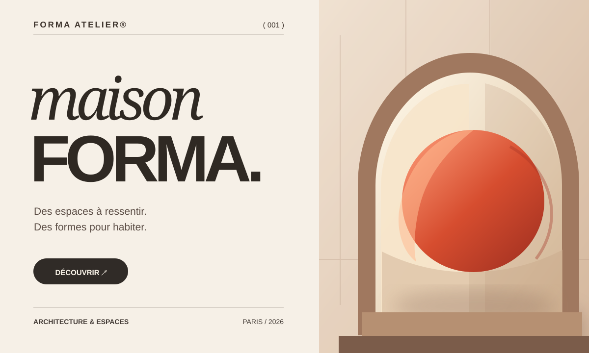
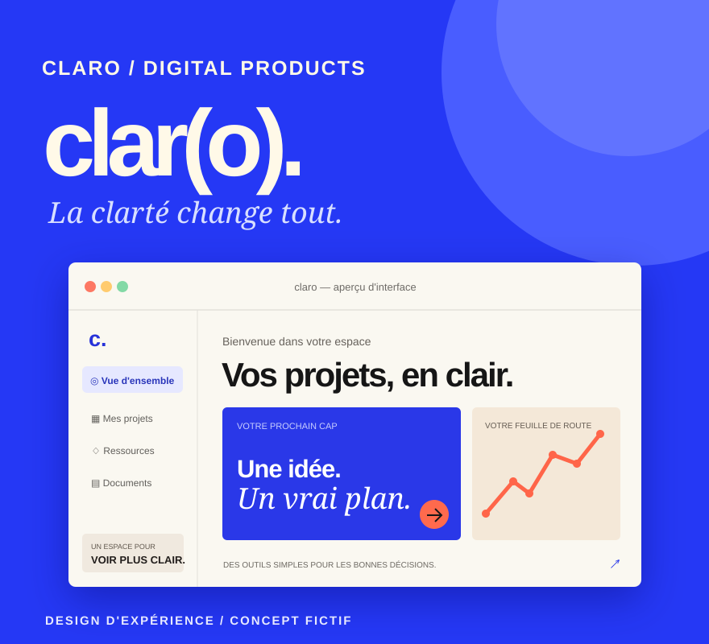

01
Création de
sites web
Des sites élégants, rapides et adaptés au mobile, pensés pour présenter votre activité avec justesse.
STUDIO CRÉATIF · STRATÉGIE & DESIGN
Un beau site ne suffit pas. Nous créons des expériences numériques qui racontent votre histoire, inspirent confiance et donnent envie d'aller plus loin.
01 / CE QUE NOUS FAISONS
De la première idée à la mise en ligne, nous donnons forme à une présence numérique fidèle à votre activité.
Des sites élégants, rapides et adaptés au mobile, pensés pour présenter votre activité avec justesse.
Une direction graphique cohérente pour donner à votre marque une personnalité reconnaissable.
Des interfaces agréables à parcourir, claires à comprendre et simples à utiliser au quotidien.
Un regard extérieur pour prioriser les bons outils et avancer sans complexifier votre activité.
02 / POURQUOI NOUS
Parce que votre projet mérite mieux qu'une solution compliquée, nous privilégions l'écoute et les choix utiles.
Nous expliquons nos choix avec des mots simples, sans jargon inutile.
Vous gardez de la visibilité sur l'avancement et les décisions du projet.
Lisibilité, cohérence et confort d'utilisation guident les choix de conception.
Nous partons de vos besoins réels plutôt que d'empiler les fonctionnalités.
03 / NOS EXPLORATIONS
Trois concepts imaginés pour illustrer notre approche créative. Ce sont des démonstrations fictives, pas des commandes clients.

ARCHITECTURE INTÉRIEURE · SITE VITRINE
Une vitrine épurée, où les projets et la matière occupent le premier plan.

BEAUTÉ & BIEN-ÊTRE · IDENTITÉ VISUELLE
Un univers chaleureux et affirmé pour une marque de soins imaginée.

CONSEIL & SERVICES · DESIGN UI/UX
Une interface structurée pour rendre une offre de conseil accessible.
04 / COMMENT ÇA MARCHE
Chaque projet est différent. Notre méthode reste simple et transparente, du premier échange à la mise en ligne.
Nous découvrons votre activité, vos objectifs et ce dont vous avez vraiment besoin.
Nous dessinons une direction visuelle et une structure adaptées à votre projet.
Nous réalisons votre site ou votre identité avec soin, en ajustant les détails.
Nous vérifions le résultat et préparons les éléments nécessaires à son utilisation.
05 / ON EN PARLE ?
Une idée, un besoin ou une question ? Le premier pas, c'est simplement d'en discuter.
Écrire à Nova StudioAdresse fictive de démonstration : bonjour@nova-studio.example. Le lien ouvre votre messagerie, mais cette adresse ne reçoit pas d'emails.